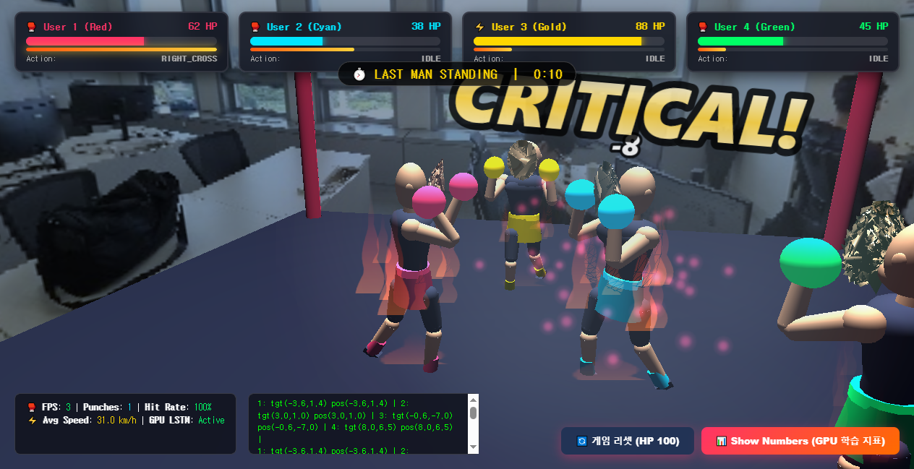
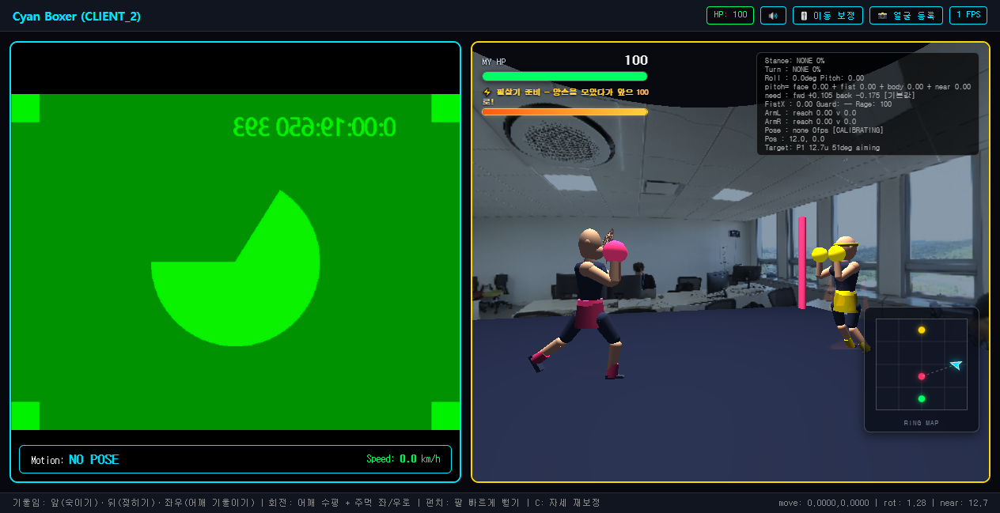

⚡ 필살기 준비 안내,
우하단 미니맵에 내 위치·시선(삼각형)과 현재 조준 대상까지의 점선.
(헤드리스 캡처라 웹캠이 가짜 영상이고 NO POSE 상태다.)| 항목 | 값 | 비고 |
|---|---|---|
| 추적 노드 | 33개 중 7개 | 코 · 양어깨 · 양팔꿈치 · 양손목 |
| 3D 얼굴 | 468 랜드마크 → 852 삼각형 | 사진 1장, Python·GPU·GLB 없음 |
| 얼굴 삼각형 복원 버그 | 3288 → 852 | 간선 목록이 양방향 중복 |
| 뒤통수까지 닫힌 머리 | 852 → 1392 삼각형 | 얼굴 테두리 36점에서 두개골 생성 |
| 펀치 판정 | 창 380ms · 1.6 m/s · 어깨폭 0.88배 | 잽 기준으로 역산 |
| 실측 펀치 간격 | 최소 0.20s · 중앙값 0.25s | 서버 로그 533회 |
| 이동 잠금 버그 | 6초 연타 중 0.0 → 39.4 units | 잠금 하한 480 → 180ms |
| 자동 조준 | 옆(90°) 상대 MISS → HIT | 펀치 순간 스냅 |
| 검증 | 하니스 11종 272개 | 로직 7종 197개 + 실제 브라우저 4종 |
| 실영상 정확도 | F1 0.386 (정답 29 / 검출 59) | 90초 라벨 영상 |
기능이 "틀리게" 동작한 적은 거의 없었다. 대신 아무 말 없이 꺼져 있었다. 예외도 경고도 없고, 화면은 그럴듯하게 돌아간다.
서버 타격 판정이 dot(시선, 상대방향) > 0.3 이라 조준이 곧 명중률인데,
클라이언트는 상대 위치 표를 상대가 보낸 패킷으로만 채우고 있었다. 혼자 접속하면
돌아오는 패킷의 client_id가 전부 나 자신이라 이 표가 영원히 비고,
상시 정렬·펀치 스냅·자동 접근이 셋 다 조용히 무효가 된다.
원인의 형태. 서버는 접속 여부와 무관하게 4명 전원을 타격 대상으로 두는데 클라이언트만 "접속한 상대"로 좁혀 보고 있었다 — 두 쪽이 아는 세계가 달랐다.
펀치 잠금의 하한이 480ms였는데 실측 펀치 간격은 중앙값 0.25초였다. 연타 중에는 잠금이 한 번도 풀리지 않는다. 게다가 잠금은 세 군데에서 이동을 죽이고 있었다.
let mCand = "NONE"; if (!locked) { ... } // (1) 새 상태가 안 생김
if (locked) mi = 0; // (2) 남은 강도까지 0
if (!punchFreeze) { /* 이동 전체 */ } // (3) 적용 단계에서 또 차단증상이 코드 구조와 정확히 일치했다 — 자동 조준은 punchFreeze 블록 바깥,
이동은 안에 있었고, 사용자 보고도 "회전은 되는데 이동만 안 된다"였다.
고친 방향은 "잠금을 없애기"가 아니라 무엇을 잠글지 나누기였다. 잠금의 목적은 오염된 신호로 새 방향이 생기는 것을 막는 데 있다. 잠금 직전에 이미 확정돼 있던 이동 의사는 펀치가 만든 것이 아니므로 죽일 이유가 없다.
얼굴 메쉬를 구 안쪽 z=0.62에 배치해 대부분이 잠겼다. 배치를 상수로 박은 것이 잘못이다 —
얼굴 깊이는 사람마다 다르다. 이제 정점마다 타원체 밖 조건을 d로 풀어 최댓값을 취한다.
(x/a)² + (y/b)² + ((z+d)/c)² ≥ 1
k = 1 − (x/a)² − (y/b)² k ≤ 0 이면 x·y 만으로 이미 바깥
그 외에는 d ≥ c·√k − zbounds.zMin 하나로 어림하면 안 된다. 가장 뒤쪽 정점이 가장 깊이 박히는 정점이 아니다 —
옆으로 벌어진 뺨은 타원체가 좁아지는 자리라 오히려 여유가 있고, 가운데 낮은 정점이 더 위험하다.
face3d.js는 넣었는데 face_mesh CDN을 안 넣었다. 얼굴 토폴로지가 없으니
삼각형을 못 만들고 복원이 통째로 실패한다. "host는 얼굴을 촬영하지 않으니 라이브러리가 필요 없다"고
넘겨짚은 것이 원인이다. 인스턴스를 만들지 않으므로 무거운 WASM은 받지 않는다 — 스크립트만 있으면 됐다.
위 네 건 중 두 건은 로직 하니스가 전부 통과시켰다. 결정적인 사례가 하나 더 있다.
TypeError: fx.update is not a function
at animate (.../client?id=client_2:1122:10)이펙트 매니저를 const fx로 받았는데 animate() 안에 원래부터 정면 벡터
const fx가 있었다. 안쪽이 바깥쪽을 가려 매 프레임 예외가 났고, 그 지점이
renderer.render() 직전이라 3D가 한 번도 안 그려졌다.
requestAnimationFrame은 함수 맨 위에서 이미 예약되므로 루프는 계속 돌고,
웹캠 캔버스 그리기는 예외 지점보다 앞이라 멀쩡했다 — "웹캠은 되는데 3D만 안 보인다".
| 계층 | 무엇을 보는가 | 종수 |
|---|---|---|
| 로직 (THREE 최소 스텁) | 알고리즘이 맞는가 | 7 |
| 실제 브라우저 (헤드리스 Chrome + CDP) | 페이지가 사는가 | 4 |
브라우저 계층은 npm 의존성 없이 Node 22 내장 fetch/WebSocket만 쓴다.
WebGL은 SwiftShader 소프트웨어 렌더링이라 GPU 없는 환경에서도 돈다.
punch_core.js로 빼 브라우저와 Node가 같은 모듈을 import 하게 했다.STRAIGHT로 분류됐다.
실제 훅은 바깥에서 들어와 상대를 지나쳐 간다.문서도 검사 대상이다. README가 반복적으로 코드와 어긋났다 — 데미지 표는
밸런스를 바꾼 뒤에도 옛 값이 남았고, ENERGY_WAVE는 감지 로직이 없어 발동조차 못 하는데
사용 가능한 기술로 적혀 있었다. 조작 문서가 틀리면 사용자는 "기능이 고장났다"고 판단한다 —
실제로 그런 보고가 여러 번 있었다. 그래서 임계값 26개·데미지 표·액션 목록·미구현 표기를
코드에서 뽑아 문서와 대조하는 하니스를 두었다.
기존 검토는 세 안을 놓고 저울질했다.
| 안 | 결과물 | 비용 |
|---|---|---|
| A. 사진을 구에 텍스처 | 정면만 맞는 2.5D | 낮음 |
| B. DECA/FLAME 오프라인 복원 | 진짜 3D | Python·GPU·GLB, 시간 리스크 큼 |
| C. 다중 뷰 빌보드 | 중간 | 단순성 대비 이득 작음 |
네 번째 길이 있었다. MediaPipe Face Mesh가 브라우저에서 468개 3D 랜드마크를 준다. 고정 토폴로지를 쓰므로 랜드마크를 정점으로, 테셀레이션을 삼각형으로 삼으면 사진 한 장에서 그 사람의 실제 3D 얼굴 메쉬가 나온다. B의 결과물을 A의 비용으로 얻는다.
그리고 이 선택이 게임에 직접 값을 한다 — 진짜 메쉬라서 "맞으면 일그러지고 HP가 낮으면 표정이 바뀌는" 것을 정점 변형으로 표현할 수 있다. 텍스처를 입힌 구였다면 불가능했다. FPS는 Face Mesh를 촬영 순간에만 돌리고 끄는 것으로 해결했다 — 복원된 메쉬는 정적이라 추가 비용 0이다.
FACEMESH_TESSELATION은 삼각형이 아니라 간선 쌍 목록이고, 같은 간선을
[a,b]와 [b,a]로 양방향 모두 담는다(2556 = 1278×2). 3-사이클 탐색으로 복원하면
같은 삼각형이 2×2 = 4번 잡힌다(3288개). 실은 이 배열이 삼각형 목록에서 생성된 것이라
3개씩 묶으면 한 삼각형이다(852개 그룹 전부 닫힘, 어긋난 그룹 0개). 추측할 이유가 없었다.얼굴 메쉬만 씌우면 두개골은 원래 색 그대로라 얼굴 가장자리에서 색이 뚝 끊긴다. 그 경계선이 "얼굴을 붙인 머리"가 아니라 "가면을 쓴 인형"으로 보이게 만든다. 얼굴 텍스처에서 평균 피부톤을 뽑아(볼·코 주변만 표본, 그림자·하이라이트 제외) 머리·목·팔다리를 같은 톤으로 맞추니 경계가 사라졌다.
전진/후진 임계값을 세 번 고쳤다.
| 차수 | 전진 발동 | 후진 발동 | 근거 |
|---|---|---|---|
| 4차 | 0.16 | 0.12 | "사람은 뒤로 조금밖에 못 젖힌다" |
| 12차 | 0.105 | 0.175 | 실사용은 정반대였다 |
| 16차 | 사람마다 측정 | 고정값으로는 아무에게도 안 맞는다 | |
12차에서 뒤집은 이유는 신호 구조에 있었다. 전진 신호는 얼굴·주먹·어깨폭 여러 항으로 분산되는 반면, 후진은 얼굴이 올라가는 한 가지 신호로 곧장 잡힌다. 같은 임계값이면 후진만 과하게 걸린다. 그런데 뒤집었더니 이번엔 반대쪽이 안 맞았다 — 기울일 수 있는 범위가 사람마다 다르다는 것이 진짜 원인이었다. 3단계 보정(중립 → 최대 전진 → 최대 후진)으로 재고, 최대 기울기의 45%를 발동 임계로 잡는다.
하니스 272개가 전부 통과한다. 그런데 하니스는 로직이 내가 의도한 대로 도는가만 본다. 합성 궤적을 넣으면 합성 궤적에 맞춰 만든 임계값이 당연히 맞는다. "실제 사람이 잽을 뻗었을 때 잽으로 잡히는가"는 여기서 알 수 없다.
그래서 90초짜리 영상에 구간별 정답 라벨을 붙여 채점했다 — 준비 / 직선 / 훅 / 어퍼컷 / 풋워크 / 콤보 / 마무리, 사이사이에 숨고르기. 동작 구간과 비동작 구간을 명시적으로 나눈 것이 핵심이다. "몇 개 맞혔나"만 세면 헛발사를 놓친다.
| 지표 | 값 |
|---|---|
| 정답 / 검출 | 29 / 59 |
| TP / FP / FN | 17 / 42 / 12 |
| 정밀도 | 0.288 |
| 재현율 | 0.586 |
| F1 | 0.386 |
| 기술 종류 정확도 | 0.235 |
| 좌우 정확도 | 0.471 |
| 타이밍 오차 | 평균 111.9 ms |
재현율 0.586은 나쁘지 않다. 문제는 29개를 맞히려고 59개를 쏜다는 것이다.
| 구간 | 성격 | 검출 |
|---|---|---|
| 2. 직선 06~18s | 동작 | 5 |
| 3. 훅 23~35s | 동작 | 17 |
| 4. 어퍼컷 40~52s | 동작 | 15 |
| 5. 풋워크 57~70s | 비동작 | 9 |
| 6. 콤보 75~85s | 동작 | 11 |
| 숨고르기 4구간 | 비동작 | 2 |
풋워크에서 9번 헛나간다. 스텝을 밟으면 상체가 좌우로 흔들린다. 판정은 손목 속도를 어깨 기준으로 재는데, 어깨 자체가 움직이면 가만히 있는 손도 빠르게 움직인 것으로 읽힌다. 어깨폭으로 정규화한 것은 사람마다 다른 체격을 흡수하려는 것이었지 몸통 흔들림을 빼려는 게 아니었다.
훅·어퍼 구간이 정답보다 훨씬 많다. 쿨다운(같은 팔 400ms / 아무 팔 200ms)이 있는데도 이렇다는 것은, 훅처럼 궤적이 긴 동작이 쿨다운을 넘겨 계속 조건을 만족시킨다는 뜻이다.
플레이할 때 체감은 나쁘지 않았다. 이유가 있다 — 과검출은 "잘 나간다"로 느껴진다. 주먹을 뻗었는데 두 번 나가면 손해 보는 기분이 안 든다. 헛발사도 상대에게 맞지 않으면 그냥 허공을 친 것으로 보인다. 즉 체감으로는 정밀도를 절대 못 잡는다.
판정 튜닝을 여러 차례 바꾼 뒤 이 파이프라인을 돌려 이전 결과와 비교했다. 한 수치도 안 바뀌었다. 절대경로 한 줄을 빼면 결과 파일이 비트 단위로 동일했다.
평가기가 punch_core.js 를 읽는 대신 상수를 자기 파일에 복사해 갖고 있었다.
런타임을 어떻게 고치든 점수는 안 움직인다. 값을 하나씩 대조하니 펀치 상수 12개는 마침 일치했지만
(그래서 위 점수는 유효하다), 같은 폴더의 전체동작 평가기는 자세·이동 상수 12개가 옛 값이었고
필살기 판정이 통째로 빠져 있었다.
이것이 앞의 조용한 실패와 정확히 같은 형태라는 점이 중요하다. 평가기는 에러 없이 잘 돌고, 숫자를 내놓고, 그 숫자가 틀렸다는 신호를 아무것도 주지 않는다. 측정 도구가 조용히 어긋나면 그 위에 쌓은 모든 판단이 어긋난다.
근본 해법은 평가기가 Node로 punch_core.js 를 직접 실행하는 것이다. 판정 로직을
HTML에서 독립 파일로 분리하면서 DOM·THREE·MediaPipe 의존을 0으로 만든 것이 이걸 위해서였다 —
브라우저는 <script> 로, Node는 require 로 같은 파일을 읽을 수 있다.
iter3/).
팀 저장소라 여기서는 분석만 다룬다.